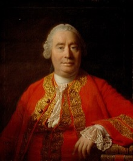

1711-1776 · The Enlightenment
← The philosophy map · About Hume
Is most of what we 'know' about the world really just habit?
Every morning you press the switch and the light comes on. You don't think about it; you just expect it. But have you ever actually seen why it happens, or have you only seen it happen many times? A cheerful Scottish thinker said that much of what we call knowledge is really habit.
Read one part at a time. After each part, close your eyes and answer the question before you check.
David Hume was born in Edinburgh, Scotland, in 1711. His family wanted him to become a lawyer, but he only wanted to read philosophy. In his twenties he wrote A Treatise of Human Nature, a bold attempt to explain how the human mind works. It was published in 1739, and almost nobody read it. Hume said it "fell dead-born from the press". He did not give up; he rewrote his ideas in shorter, clearer books.
What happened when Hume published A Treatise of Human Nature?
Hume's ideas made many religious people angry, and twice he failed to become a university professor. But he found other ways to succeed. His History of England, which he began in 1754, made him famous and rich. In the 1760s he worked at the British embassy in Paris, where the elegant salons loved his wit and kindness. He was a large, friendly man, and the French called him 'le bon David': the good David.
What finally made Hume famous and rich?
Hume's most famous idea is about cause and effect. When one billiard ball hits another, we say the first ball causes the second to move. But what do we actually see? Only one event followed by another, many times. We never see the 'cause' itself. Our belief comes from habit: we expect the future to be like the past. He also argued that feelings, not reason, drive our choices. Hume died calmly in Edinburgh in 1776.
According to Hume, why do we expect the sun to rise tomorrow?
Each word is hidden in a sentence. Read it aloud and say what you think the bold word means. Then reveal and compare.
Which beliefs come from habit and experience, and which can be proved just by thinking, like maths? Decide together, then reveal.
Now you: explain Hume's idea about habit and cause to a friend who has never heard of it. Speak for about a minute. Use the starters if they help.
You need to cross a deep river. An old wooden bridge has carried thousands of people safely for fifty years, but nobody has ever checked how it was built. Next to it is a brand-new bridge with a perfect report from expert engineers, but nobody has crossed it yet.
Tap two cards. Use the timer to keep going, and use at least two of the phrases above.
No looking back. Answer from memory first, then check.
What did Leibniz mean by 'the best of all possible worlds'?
What was Spinoza's big idea about God and Nature?
What does Ockham's razor say?
What did Marcus Aurelius mean by the inner citadel?
From memory, out loud. Then check.
1. Where does our belief in cause and effect come from, according to Hume?
2. What happened to Hume's first big book?
3. What did the French call Hume, and why?
4. What does 'pattern' mean? Give an example.